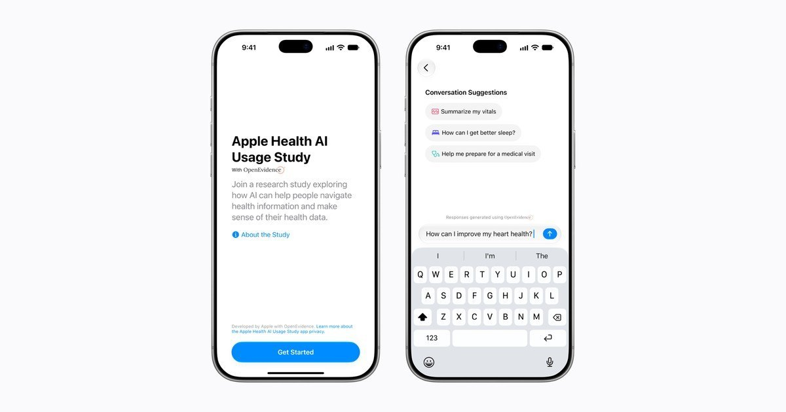

AI
Brief
Sunday edition
Alibaba's new top AI model costs less per task
OpenAI credits its model with the hard part of a physics proof, Apple opens a study of how people trust AI health answers, and Washington reportedly picks its AI champions.
What matters today
Cheaper work per task
Alibaba opens Qwen4-Max, its top model, at a lower cost per task.
- Available on Vercel's AI Gateway from November 15; Alibaba dates the general release November 16. Reads text and images, up to 1 million tokens; no open weights.
- Cost: on Alibaba's own work test, the average task fell from 26.58 to 11.16 yuan against Qwen3.8-Max. Artificial Analysis scores it 43, 38th of 81 models.
Why it mattersTop models now compete on the cost of a finished job, not only the price per token. That is the number to compare when choosing a model for long agent tasks.
AI does the hard part of a proof
OpenAI's GPT-6 Astra helps a physicist build a long-sought proof.
- What: a candidate way to define the Standard Model of physics on a grid, open for over 50 years. Nathaniel Craig set the strategy; Astra built the construction and proof.
- Stage: a candidate, not a finished theory; Craig calls it an answer in principle. It is the first post on OpenAI's new science blog.
Why it mattersModels are now credited with the hard middle of expert work while a person sets direction and checks it. Tools for experts will be judged on how well people can steer and verify.

Apple tests AI health answers
Apple opens a study app that answers health questions with AI.
- Who: up to 200,000 US adults aged 21 and older with an iPhone 15 Pro or later. Answers come from OpenEvidence, with peer-reviewed sources linked.
- What it measures: trust, understanding and what people do next. People can choose to share Health data; study data will not train AI models.
Why it mattersApple tests health answers on real people, with a source on every answer, before calling them a product. In sensitive areas, that kind of evidence may become what buyers and regulators expect.
US picks AI champions
The US reportedly plans to name AI national champions.
- Who: more than two dozen companies, including Nvidia, Amazon, Microsoft, OpenAI and Anthropic, under the American AI Exports Program set up in July 2025.
- What they get: faster export licenses, government support for projects abroad and federal financing, per the Commerce Department. An announcement is expected within a week.
Why it mattersWashington is choosing which AI vendors it backs abroad. Outside the US, those vendors become the government-backed option, which helps them win deals and makes life harder for smaller rivals.
Also in the news
- Apple glasses and Siri: reportedly, Apple's first glasses rely on Siri running tasks inside iPhone apps; those app controls are in the first iOS 27.3 beta.
- Bland Tofu-1: a voice model for phone agents that listens and speaks at once and separates callers from background noise; a gated research preview, general release in January.
- AI chip exports: lawmakers of both parties back tighter limits on AI chip sales to China; a bill stalled since April 2025 draws new interest.
- DeepSeek Coding Plan: developers found usage-limit code for a 'Coding Plan' in DeepSeek's web chat; DeepSeek has announced no plan, price or date.
- SambaNova and Intel: a SuperComputing 2026 demo splits AI serving between Intel's air-cooled D-Series GPUs and SambaNova's SN50 chips, for data centers without liquid cooling.
- Huawei Balong AI modem: Huawei says the Kirin 9050's modem flags over 90% of forwarded overseas scam calls.